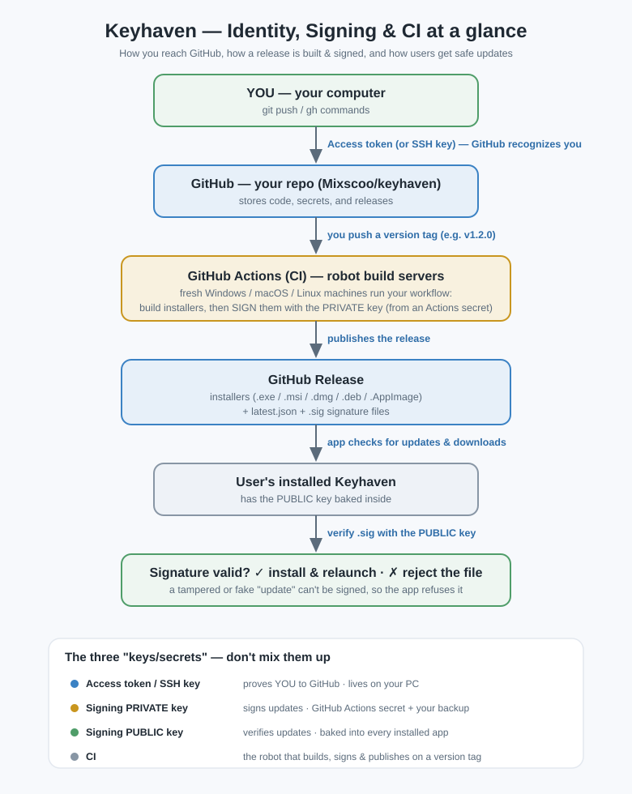

How GitHub knows it's you, how your app's updates stay trustworthy,
and how the robots build and ship your releases.
Tip: this is a printable e-book. Open it in a browser and choose Print → Save as PDF if you ever need a fresh copy.

Everything that confused you boils down to four pieces doing two kinds of job. Get this map straight and the rest clicks.
They use different keys, aimed at different audiences. People mix them up constantly — you won't anymore.
| Piece | Its one job | Audience | Lives where |
|---|---|---|---|
| Access token (PAT) | proves YOU | GitHub | your PC (keyring) |
| SSH key | proves YOU (alt. to token) | GitHub | your PC (~/.ssh) |
| Signing key (private+public) | proves an update is genuine | users' apps | CI secret + your backup / baked in app |
| CI (GitHub Actions) | builds, signs & ships automatically | — | GitHub's servers |
A Personal Access Token (PAT) is a long, random secret string that works as a password replacement. GitHub turned off real-password git access in 2021, so you authenticate with a token (or SSH, next chapter).
When you git push over an https:// remote, git sends the token as the
"password." A credential helper caches it so you don't paste it every time.
Think of it as swiping an ID badge: GitHub looks up the token, sees it maps to your account
with these permissions, and allows the action.
You didn't hand-make a PAT — you ran the GitHub CLI:
gh auth login # opens a browser login, stores a token for you
gh auth status # shows the account + token it's using
That stored a token (gho_…) in your OS keyring. Same concept,
friendlier setup.
SSH is the other way to prove you're you. Instead of sending a token, your machine proves it holds a secret key — without ever transmitting it.
When you connect to git@github.com, GitHub issues a cryptographic challenge.
Your private key answers it; GitHub checks the answer against your uploaded public key.
If they match, you're in — no token typed.
ssh-keygen -t ed25519 -C "mgbl2203@gmail.com"~/.ssh/id_ed25519 (private — keep secret) and
id_ed25519.pub (public).
.pub file.git@github.com:Mixscoo/keyhaven.git.| Token / HTTPS | SSH | |
|---|---|---|
| Setup | simplest (esp. with gh) | generate + upload key |
| Expiry to manage | often yes | no |
| Best when | occasional use, CLI tooling | you push constantly |
This key has nothing to do with GitHub identity. Its audience is your users' installed apps. Because Keyhaven auto-downloads updates from the internet, each app must be sure an update is really yours and untampered — otherwise a poisoned "update" could steal vaults. Signing guarantees authenticity.
Only you own the signet ring (the private key) that stamps each release. Everyone recognizes your seal (the public key) but can't forge it. A release with a valid seal is trusted; a missing/wrong seal is rejected.
npm run tauri signer generate -w keyhaven-updater.key --ciThis produces keyhaven-updater.key (private) and keyhaven-updater.key.pub (public).
src-tauri/tauri.conf.json under
plugins.updater.pubkey. It gets baked into every build.Get-Content keyhaven-updater.key -Raw | gh secret set TAURI_SIGNING_PRIVATE_KEYTAURI_SIGNING_PRIVATE_KEY_PASSWORD (empty if the key has no passphrase).keyhaven-updater.key somewhere safe and never commit it.
CI signs each installer with the private key → produces a .sig + a
latest.json → uploads them to the release. A user's app downloads the update and
its .sig, then verifies it with the embedded public key. Valid → install; invalid → reject.
npm run tauri build that says "no private key" is normal — your laptop
doesn't hold the signing key. The installers still build fine; signing happens in CI. To sign
locally, set TAURI_SIGNING_PRIVATE_KEY from your key file first.
CI = Continuous Integration. In plain terms: robot computers on GitHub's servers that automatically run your commands when something happens (a push, a tag, a pull request). CI/CD adds "Continuous Delivery" — it also publishes the result (your installers).
| Term | Meaning |
|---|---|
| Workflow | a YAML file in .github/workflows/ describing the steps (yours: release.yml) |
Trigger (on:) | what starts it — yours: pushing a tag like v1.2.0 |
| Runner | the throwaway virtual machine GitHub boots |
| Job | a group of steps on a runner (yours repeats across 4 OS targets via a "matrix") |
| Step | one command or action (checkout, install, build…) |
| Secret | an encrypted value injected as an env var, masked in logs (your signing key) |
v1.2.0 → GitHub sees the on: push: tags: v* trigger.latest.json.GITHUB_TOKEN (auto-created per run, expires at the end) lets the
workflow publish on your behalf.gho_… token authenticates you
from your PC; the workflow's GITHUB_TOKEN is a short-lived one GitHub mints for each
CI run so the robot can act on the repo.
npm run release 1.2.0 (pushes the tag → triggers CI).gh run watch or the repo's Actions tab..github/workflows/release.yml.When you want to ship an update entirely on your own:
npm run check and npm test (and
optionally npm run tauri build to smoke-test).npm run release 1.2.0 — bumps every manifest, commits,
tags, pushes; the guard refuses anything not higher than the current version.| Term | In one line |
|---|---|
| Authentication | proving who you are |
| Signing | proving a file is genuine & untampered |
| PAT / access token | secret string that proves you to GitHub over HTTPS |
| SSH key | key pair that proves you to GitHub over SSH |
| Private signing key | signs updates; secret; CI + your backup |
| Public signing key | verifies updates; baked into the app |
| Actions secret | encrypted value stored in the repo, used by CI |
GITHUB_TOKEN | temporary per-run token CI uses to publish |
| CI / CD | robot that builds (CI) and ships (CD) automatically |
| Workflow | YAML recipe in .github/workflows/ |
| Runner | throwaway VM that runs a workflow |
| SemVer | MAJOR.MINOR.PATCH versioning |
latest.json | file the updater reads to learn the newest version |
.sig | signature proving an installer is genuine |
gh auth status # who am I to GitHub?
git push # uses your token/SSH to authenticate
npm run check && npm test # verify before releasing
npm run release 1.2.0 # bump + commit + tag + push (triggers CI)
gh run watch # follow the CI build
gh run list --workflow=release.yml— End of guide · Keyhaven —